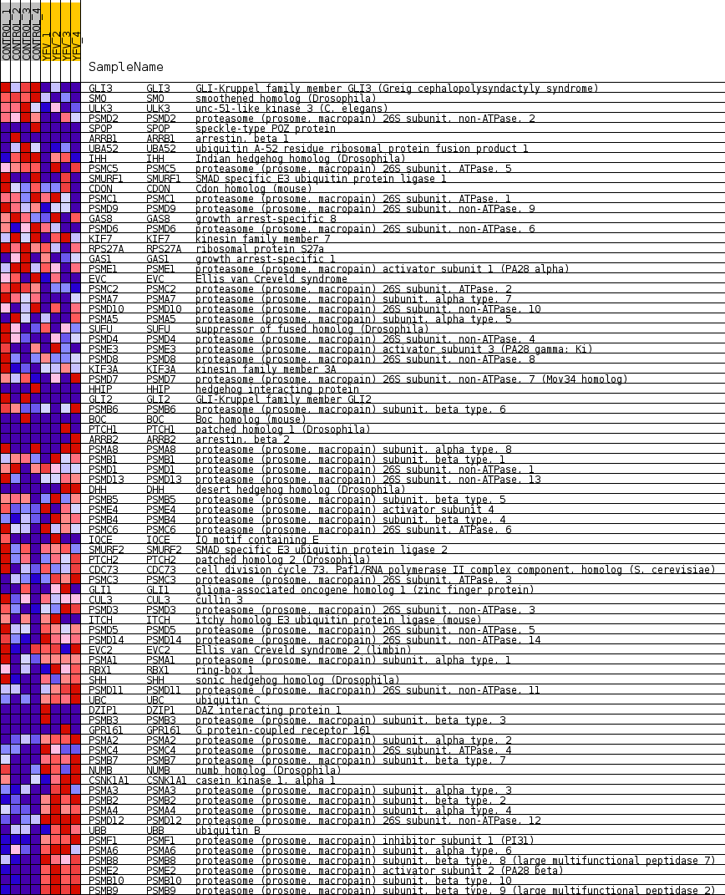
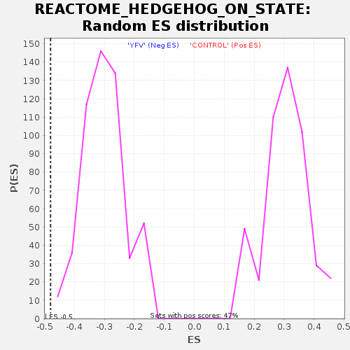

Profile of the Running ES Score & Positions of GeneSet Members on the Rank Ordered List
| Dataset | MATRIZ_GSE99081_collapsed_to_symbols.gsea_CLASE_99081.cls#CONTROL_versus_YFV |
| Phenotype | gsea_CLASE_99081.cls#CONTROL_versus_YFV |
| Upregulated in class | YFV |
| GeneSet | REACTOME_HEDGEHOG_ON_STATE |
| Enrichment Score (ES) | -0.4796742 |
| Normalized Enrichment Score (NES) | -1.5857191 |
| Nominal p-value | 0.0 |
| FDR q-value | 0.07328419 |
| FWER p-Value | 0.966 |
| SYMBOL | TITLE | RANK IN GENE LIST | RANK METRIC SCORE | RUNNING ES | CORE ENRICHMENT | |
|---|---|---|---|---|---|---|
| 1 | GLI3 | GLI-Kruppel family member GLI3 (Greig cephalopolysyndactyly syndrome) | 61 | 1.463 | 0.0393 | No |
| 2 | SMO | smoothened homolog (Drosophila) | 323 | 0.933 | 0.0506 | No |
| 3 | ULK3 | unc-51-like kinase 3 (C. elegans) | 597 | 0.783 | 0.0567 | No |
| 4 | PSMD2 | proteasome (prosome, macropain) 26S subunit, non-ATPase, 2 | 711 | 0.738 | 0.0715 | No |
| 5 | SPOP | speckle-type POZ protein | 1852 | 0.500 | 0.0156 | No |
| 6 | ARRB1 | arrestin, beta 1 | 1868 | 0.499 | 0.0294 | No |
| 7 | UBA52 | ubiquitin A-52 residue ribosomal protein fusion product 1 | 1969 | 0.488 | 0.0375 | No |
| 8 | IHH | Indian hedgehog homolog (Drosophila) | 2126 | 0.465 | 0.0416 | No |
| 9 | PSMC5 | proteasome (prosome, macropain) 26S subunit, ATPase, 5 | 3127 | 0.329 | -0.0106 | No |
| 10 | SMURF1 | SMAD specific E3 ubiquitin protein ligase 1 | 3567 | 0.281 | -0.0295 | No |
| 11 | CDON | Cdon homolog (mouse) | 3693 | 0.268 | -0.0294 | No |
| 12 | PSMC1 | proteasome (prosome, macropain) 26S subunit, ATPase, 1 | 3697 | 0.267 | -0.0217 | No |
| 13 | PSMD9 | proteasome (prosome, macropain) 26S subunit, non-ATPase, 9 | 3732 | 0.263 | -0.0161 | No |
| 14 | GAS8 | growth arrest-specific 8 | 3935 | 0.247 | -0.0213 | No |
| 15 | PSMD6 | proteasome (prosome, macropain) 26S subunit, non-ATPase, 6 | 3986 | 0.243 | -0.0172 | No |
| 16 | KIF7 | kinesin family member 7 | 4124 | 0.233 | -0.0189 | No |
| 17 | RPS27A | ribosomal protein S27a | 4134 | 0.232 | -0.0126 | No |
| 18 | GAS1 | growth arrest-specific 1 | 4299 | 0.220 | -0.0163 | No |
| 19 | PSME1 | proteasome (prosome, macropain) activator subunit 1 (PA28 alpha) | 4391 | 0.212 | -0.0157 | No |
| 20 | EVC | Ellis van Creveld syndrome | 4556 | 0.197 | -0.0200 | No |
| 21 | PSMC2 | proteasome (prosome, macropain) 26S subunit, ATPase, 2 | 4826 | 0.173 | -0.0316 | No |
| 22 | PSMA7 | proteasome (prosome, macropain) subunit, alpha type, 7 | 5238 | 0.134 | -0.0531 | No |
| 23 | PSMD10 | proteasome (prosome, macropain) 26S subunit, non-ATPase, 10 | 5332 | 0.127 | -0.0551 | No |
| 24 | PSMA5 | proteasome (prosome, macropain) subunit, alpha type, 5 | 5659 | 0.102 | -0.0723 | No |
| 25 | SUFU | suppressor of fused homolog (Drosophila) | 6148 | 0.065 | -0.1006 | No |
| 26 | PSMD4 | proteasome (prosome, macropain) 26S subunit, non-ATPase, 4 | 6348 | 0.049 | -0.1114 | No |
| 27 | PSME3 | proteasome (prosome, macropain) activator subunit 3 (PA28 gamma; Ki) | 6661 | 0.029 | -0.1299 | No |
| 28 | PSMD8 | proteasome (prosome, macropain) 26S subunit, non-ATPase, 8 | 6710 | 0.026 | -0.1321 | No |
| 29 | KIF3A | kinesin family member 3A | 6844 | 0.019 | -0.1398 | No |
| 30 | PSMD7 | proteasome (prosome, macropain) 26S subunit, non-ATPase, 7 (Mov34 homolog) | 6854 | 0.018 | -0.1398 | No |
| 31 | HHIP | hedgehog interacting protein | 6919 | 0.015 | -0.1433 | No |
| 32 | GLI2 | GLI-Kruppel family member GLI2 | 6935 | 0.014 | -0.1439 | No |
| 33 | PSMB6 | proteasome (prosome, macropain) subunit, beta type, 6 | 7048 | 0.008 | -0.1505 | No |
| 34 | BOC | Boc homolog (mouse) | 7408 | 0.000 | -0.1728 | No |
| 35 | PTCH1 | patched homolog 1 (Drosophila) | 9308 | -0.000 | -0.2903 | No |
| 36 | ARRB2 | arrestin, beta 2 | 9362 | -0.000 | -0.2936 | No |
| 37 | PSMA8 | proteasome (prosome, macropain) subunit, alpha type, 8 | 9584 | -0.007 | -0.3070 | No |
| 38 | PSMB1 | proteasome (prosome, macropain) subunit, beta type, 1 | 9745 | -0.014 | -0.3165 | No |
| 39 | PSMD1 | proteasome (prosome, macropain) 26S subunit, non-ATPase, 1 | 10102 | -0.030 | -0.3377 | No |
| 40 | PSMD13 | proteasome (prosome, macropain) 26S subunit, non-ATPase, 13 | 10422 | -0.053 | -0.3558 | No |
| 41 | DHH | desert hedgehog homolog (Drosophila) | 10436 | -0.055 | -0.3550 | No |
| 42 | PSMB5 | proteasome (prosome, macropain) subunit, beta type, 5 | 10473 | -0.058 | -0.3556 | No |
| 43 | PSME4 | proteasome (prosome, macropain) activator subunit 4 | 10799 | -0.085 | -0.3732 | No |
| 44 | PSMB4 | proteasome (prosome, macropain) subunit, beta type, 4 | 10839 | -0.088 | -0.3730 | No |
| 45 | PSMC6 | proteasome (prosome, macropain) 26S subunit, ATPase, 6 | 11010 | -0.102 | -0.3805 | No |
| 46 | IQCE | IQ motif containing E | 11011 | -0.102 | -0.3775 | No |
| 47 | SMURF2 | SMAD specific E3 ubiquitin protein ligase 2 | 11276 | -0.127 | -0.3901 | No |
| 48 | PTCH2 | patched homolog 2 (Drosophila) | 11286 | -0.128 | -0.3869 | No |
| 49 | CDC73 | cell division cycle 73, Paf1/RNA polymerase II complex component, homolog (S. cerevisiae) | 11499 | -0.147 | -0.3957 | No |
| 50 | PSMC3 | proteasome (prosome, macropain) 26S subunit, ATPase, 3 | 11528 | -0.149 | -0.3930 | No |
| 51 | GLI1 | glioma-associated oncogene homolog 1 (zinc finger protein) | 11691 | -0.163 | -0.3982 | No |
| 52 | CUL3 | cullin 3 | 11760 | -0.170 | -0.3974 | No |
| 53 | PSMD3 | proteasome (prosome, macropain) 26S subunit, non-ATPase, 3 | 11846 | -0.178 | -0.3975 | No |
| 54 | ITCH | itchy homolog E3 ubiquitin protein ligase (mouse) | 11909 | -0.184 | -0.3959 | No |
| 55 | PSMD5 | proteasome (prosome, macropain) 26S subunit, non-ATPase, 5 | 11911 | -0.185 | -0.3905 | No |
| 56 | PSMD14 | proteasome (prosome, macropain) 26S subunit, non-ATPase, 14 | 11924 | -0.186 | -0.3858 | No |
| 57 | EVC2 | Ellis van Creveld syndrome 2 (limbin) | 12584 | -0.253 | -0.4191 | No |
| 58 | PSMA1 | proteasome (prosome, macropain) subunit, alpha type, 1 | 12891 | -0.287 | -0.4296 | No |
| 59 | RBX1 | ring-box 1 | 13011 | -0.302 | -0.4281 | No |
| 60 | SHH | sonic hedgehog homolog (Drosophila) | 13206 | -0.329 | -0.4304 | No |
| 61 | PSMD11 | proteasome (prosome, macropain) 26S subunit, non-ATPase, 11 | 13564 | -0.374 | -0.4415 | No |
| 62 | UBC | ubiquitin C | 14182 | -0.479 | -0.4656 | Yes |
| 63 | DZIP1 | DAZ interacting protein 1 | 14359 | -0.500 | -0.4617 | Yes |
| 64 | PSMB3 | proteasome (prosome, macropain) subunit, beta type, 3 | 14438 | -0.500 | -0.4519 | Yes |
| 65 | GPR161 | G protein-coupled receptor 161 | 14469 | -0.500 | -0.4390 | Yes |
| 66 | PSMA2 | proteasome (prosome, macropain) subunit, alpha type, 2 | 14672 | -0.535 | -0.4358 | Yes |
| 67 | PSMC4 | proteasome (prosome, macropain) 26S subunit, ATPase, 4 | 14766 | -0.557 | -0.4251 | Yes |
| 68 | PSMB7 | proteasome (prosome, macropain) subunit, beta type, 7 | 14794 | -0.565 | -0.4102 | Yes |
| 69 | NUMB | numb homolog (Drosophila) | 14828 | -0.573 | -0.3953 | Yes |
| 70 | CSNK1A1 | casein kinase 1, alpha 1 | 14932 | -0.603 | -0.3840 | Yes |
| 71 | PSMA3 | proteasome (prosome, macropain) subunit, alpha type, 3 | 14958 | -0.609 | -0.3676 | Yes |
| 72 | PSMB2 | proteasome (prosome, macropain) subunit, beta type, 2 | 15120 | -0.662 | -0.3581 | Yes |
| 73 | PSMA4 | proteasome (prosome, macropain) subunit, alpha type, 4 | 15508 | -0.833 | -0.3575 | Yes |
| 74 | PSMD12 | proteasome (prosome, macropain) 26S subunit, non-ATPase, 12 | 15525 | -0.844 | -0.3336 | Yes |
| 75 | UBB | ubiquitin B | 15642 | -0.918 | -0.3138 | Yes |
| 76 | PSMF1 | proteasome (prosome, macropain) inhibitor subunit 1 (PI31) | 15701 | -0.986 | -0.2884 | Yes |
| 77 | PSMA6 | proteasome (prosome, macropain) subunit, alpha type, 6 | 15762 | -1.053 | -0.2611 | Yes |
| 78 | PSMB8 | proteasome (prosome, macropain) subunit, beta type, 8 (large multifunctional peptidase 7) | 16014 | -1.655 | -0.2279 | Yes |
| 79 | PSME2 | proteasome (prosome, macropain) activator subunit 2 (PA28 beta) | 16061 | -1.905 | -0.1747 | Yes |
| 80 | PSMB10 | proteasome (prosome, macropain) subunit, beta type, 10 | 16150 | -2.694 | -0.1009 | Yes |
| 81 | PSMB9 | proteasome (prosome, macropain) subunit, beta type, 9 (large multifunctional peptidase 2) | 16195 | -3.614 | 0.0027 | Yes |

